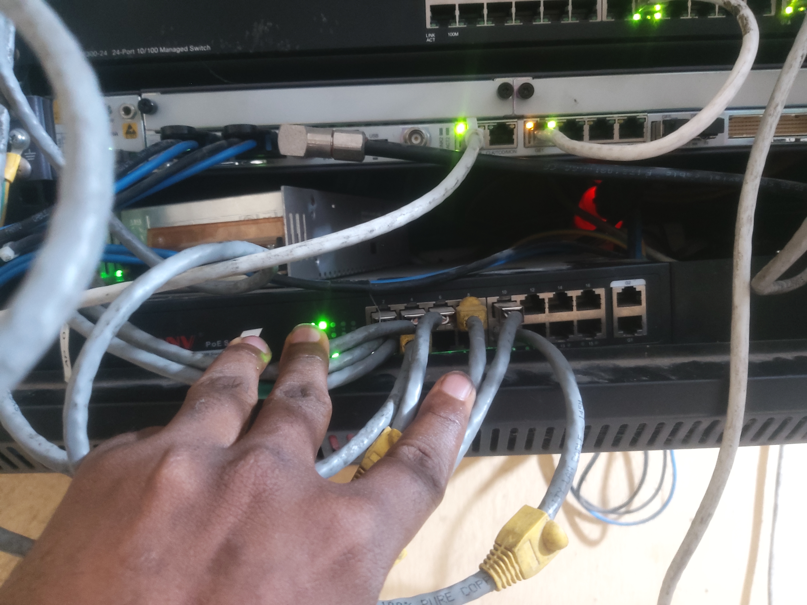

Best Practices for Network Security in 2025
Explore the latest network security trends and implementation strategies to protect your infrastructure from emerging threats...
Read MoreICT Specialist • Network & Systems Administrator • Fiber Optics Engineer
Engineering resilient networks and empowering seamless connectivity. Passionate about building reliable infrastructure and solving complex technical challenges.
Dedicated ICT professional with expertise in networking, technical support, and digital transformation
I am an ICT professional with a strong background in networking, technical support, and digital transformation, passionate about helping individuals and organizations stay connected and secure. With hands-on experience in fiber optics splicing, LAN/WAN design, Mikrotik & UniFi setup, and network security, I bring practical expertise to building reliable and efficient infrastructure.
Comprehensive technical skills across networking, systems administration, and digital infrastructure
Cisco - In Progress
Udemy - In Progress
FOA - In Progress
Academic background and professional journey in ICT
Abia State University, Uturu (ABSU)
Abia State Senior Science School, Umuahia
Showcasing successful network deployments and technical solutions
Led comprehensive network redesign and optimization project, implementing advanced routing protocols and security measures.
Result: 80% reduction in downtime
Designed and implemented fiber optic infrastructure for high-speed connectivity, including splicing and testing.
Result: 5x bandwidth increase
Successfully deployed and configured Starlink internet solutions integrated with MikroTik routers for small businesses.
Result: Enabled remote connectivity
Implemented biometric and digital ID systems for government agencies, including staff training and system deployment.
Result: Streamlined government processes
Comprehensive network infrastructure proposal for smart office environments, featuring MikroTik routers, UniFi access points, and fiber optic deployment.
Highlights of recent security upgrades, firewall deployments, and best practices implemented to safeguard client networks.
Overview of successful migrations to cloud platforms, hybrid infrastructure, and remote access solutions for businesses.
Recent upgrades and coverage improvements in wireless infrastructure, enabling seamless connectivity for clients.

Key milestones in helping organizations modernize their IT infrastructure, adopt new technologies, and improve efficiency.
What clients and colleagues say about my work
"Armstrong's expertise in network infrastructure is exceptional. He transformed our entire IT setup, resulting in 80% less downtime and significantly improved performance. His attention to detail and professional approach made the project seamless."
"Working with Armstrong on our fiber optic deployment was a game-changer. His technical knowledge and hands-on experience with splicing and testing ensured our network achieved 5x bandwidth improvement. Highly recommended!"
"Armstrong's implementation of our digital identity system was flawless. His ability to train our staff and ensure smooth deployment made the transition to biometric systems effortless. Outstanding professional service."
Insights and knowledge sharing on ICT trends and best practices
Explore the latest network security trends and implementation strategies to protect your infrastructure from emerging threats...
Read MoreLearn the essential steps and best practices for successful fiber optic cable installation and testing procedures...
Read MoreDiscover how to integrate Starlink internet solutions with existing network infrastructure for optimal performance...
Read MoreReady to build the future of your infrastructure together
armstrongnzotta8@gmail.com
+234 704 107 4484
armstrong-nzotta-734250354
armstrongnzotta